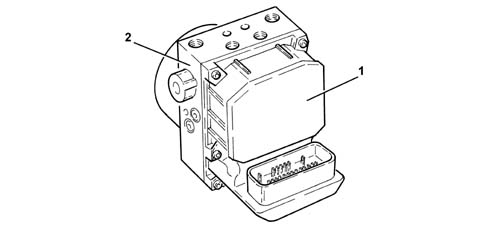
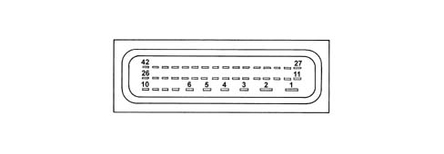
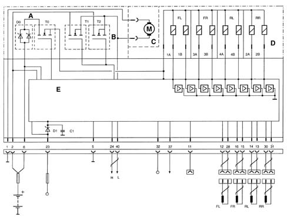
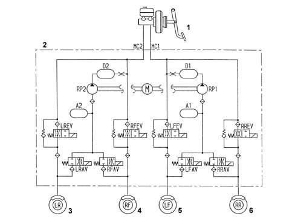
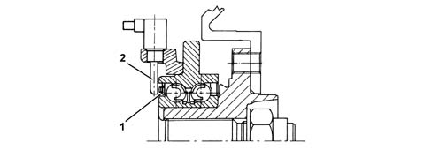
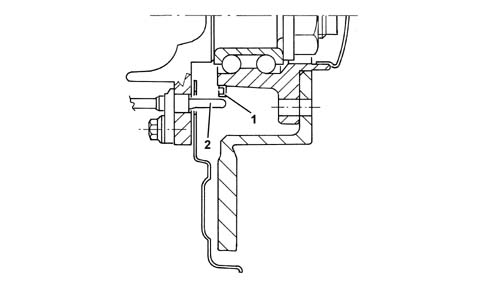
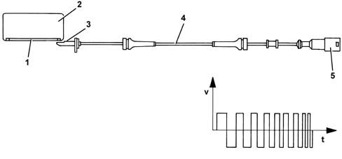

3340A ABS CHECK/ADJUSTMENT DEVICES
- Path
- Descriptions > 33 BRAKING SYSTEM > 3340 ANTI-LOCK BRAKE SYSTEM (ABS) > 3340A ABS CHECK/ADJUSTMENT DEVICES
- Kind
- system description
- Applies to
- all engines; all production periods
- Interactive page
- https://sloeber94.github.io/elrnDB-aGt/en/#/125000353
Applies to: all engines; all production periods
DESCRIPTION OF COMPONENTS
Electro-hydraulic unit
Composition
Structure
The unit consits of an electronic control unit (1) and an electro-hydraulic control unit (2).

Electronic control unit
Specifications
Function
The electronic control unit carries out the following functions:
- acquiring the data coming from the wheel rpm sensors
- memorizing the control parameters defined during the vehicle P.D.I.
- memorizing the software
- processing the data acquired
- controlling the braking process
- detecting faults in the ABS components
- memorizing the fault codes and activating the ABS and EBD warning lights
- transmitting and receiving data via the C-CAN line
- transmitting and receiving data via the diagnostic connector
PIN OUT

1 - Power earth
2 - +30 power supply
3 - N.C.
4 - N.C.
5 - Signal earth
6 - +30 Supply
7 - N.C.
8 - N.C.
9 - N.C.
10 - N.C.
11 - K diagnostic line
12 - Left front sensor signal
13 - Left rear sensor positive
14 - Left rear sensor signal
15 - Right front sensor positive
16 - Left rear sensor signal
17 - N.C.
18 - N.C.
19 - N.C.
20 - N.C.
21 - N.C.
22 - N.C.
23 - +15 Supply
24 - CAN-H line
25 - N.C.
26 - N.C.
27 - N.C.
28 - Left front sensor positive
29 - N.C.
30 - Right rear sensor positive
31 - Right rear sensor signal
32 - N.A. stop button
33 - N.C.
34 - N.C.
35 - N.C.
36 - N.C.
37 - VSO vehicle speed (recovery)
38 - N.C.
39 - N.C.
40 - CAN-L line
41 - N.C.42 - N.C.
BASIC WIRING DIAGRAM

A - Solenoid valve relay
B - Pump motor relay
C - Pump motor
D - Valve assembly
E - Electronic control unit
FL - Left front sensor
FR - Right front sensor
RL - Left rear sensor
RR - Right rear sensor
1A-1B - Left front wheel solenoid valves
3A-3B - Right front wheel solenoid valves
4A-4B - Left rear wheel solenoid valves
2A-2B - Right rear wheel solenoid valves
Electro-hydraulic control unit
Specifications
Function
It has the task of modulating the pressure of the fluid at the brake calipers via solenoid valves with the following operating stages:
- brake fluid pressure increase
- brake fluid pressure maintenance
- brake fluid pressure discharge
Composition
Structure
the electro-hydraulic control unit is composed of:
- eight 2-way solenoid valves
- a dual circuit recovery pump
- two low pressure accumulators
- two high pressure accumulators

1 - Brake servo brake pump assembly
2 - Electro-hydraulic control unit
3 - Left rear wheel
4 - Right front wheel
5 - Left front wheel
6 - Right rear wheel
Active sensors
Specifications
System details
The adoption of active sensors offers the following advantages:
- less sensitivity to the distance between the sensor and the magnetic ring (gap)
- a reduction in sensitivity to electro-magnetic interference
- the capacity of the active sensor to measure wheel rpm speeds down to zero (instead of 2.5 km/h for passive sensors)
- a saving in weight and dimensions
- a simplification of the transmission couplings through the elimination of the flywheels.
Composition
Structure
Active sensors consist of two fundamental components:
- a multipolar magnetic codifier (1) incorporated in the wheel hub bearing
- a (magnectic-resistive) receiver (2) facing the codifier.
FRONT SENSOR

REAR SENSOR

Operation
General remarks
The active sensor operates according to the variation in the internal electrical resistance according to the intensity and direction of the lines of force of an external magnetic field (multipolr magnetic codifier) producing a variable square wave signal whose frequency varies according to the rotation speed of the wheel, but with a constant amplitude.
The active sensor is therefore an integrated electronic sensor, connected by means of a cable to the ABS control unit, from which it receives an electrical supply and to which it transmits the speed of the vehicle.
The flywheel is a multipolar ring, an elastomer with a certain quantity of magnetic particles which, by means of a special magnetization technique, are orientated to produce different magnets with alternate North South poles in a circumference arrangement.

1 - Magnetized seal
2 - Bearing
3 - Sensor head
4 - Active sensor
5 - Sealed connector